L00289 · validation
Native landmark observations conflict. Frequency must not overrule that evidence.
L00001 · validation
A coarse teacher boundary recurs among the learned proposals. Exact dimensions and source construction are separate questions.
L00027 · validation
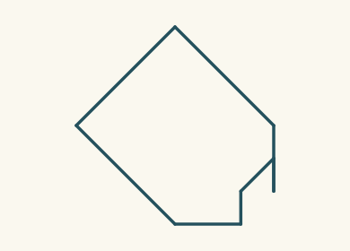
The teacher boundary has an unseen coarse route; retrieval alone cannot invent it.
L00007 · test
An admissible completion differs from the teacher. Partial evidence need not determine the intended boundary.
L00014 · validation
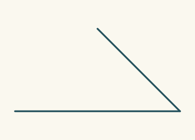
No usable closed teacher boundary. Absence of a training target is not a negative shape label.
L00004 · validation
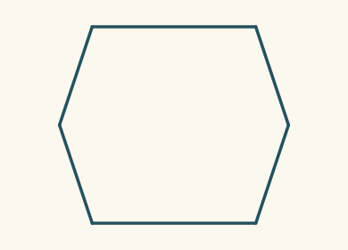
A coarse teacher boundary recurs among the learned proposals. Exact dimensions and source construction are separate questions.
L00011 · validation
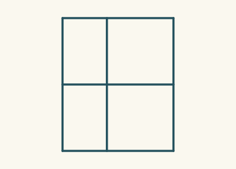
A coarse teacher boundary recurs among the learned proposals. Exact dimensions and source construction are separate questions.
L00017 · validation
No usable closed teacher boundary. Absence of a training target is not a negative shape label.
L00020 · test
No usable closed teacher boundary. Absence of a training target is not a negative shape label.
L00030 · validation
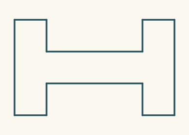
The teacher boundary has an unseen coarse route; retrieval alone cannot invent it.
L00033 · test
The teacher boundary has an unseen coarse route; retrieval alone cannot invent it.
L00036 · test
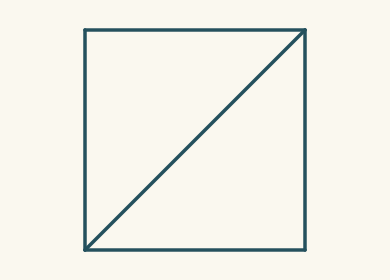
An admissible completion differs from the teacher. Partial evidence need not determine the intended boundary.
L00046 · test
An admissible completion differs from the teacher. Partial evidence need not determine the intended boundary.
L00049 · test
A coarse teacher boundary recurs among the learned proposals. Exact dimensions and source construction are separate questions.
L00062 · test
No one learned boundary accommodates these streams together. A multi-part scene can exceed the current one-boundary hypothesis.
L00072 · validation
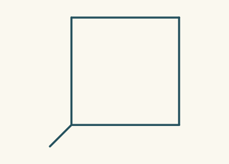
A coarse teacher boundary recurs among the learned proposals. Exact dimensions and source construction are separate questions.
L00085 · validation
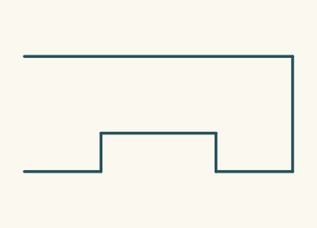
No usable closed teacher boundary. Absence of a training target is not a negative shape label.
L00040 · validation
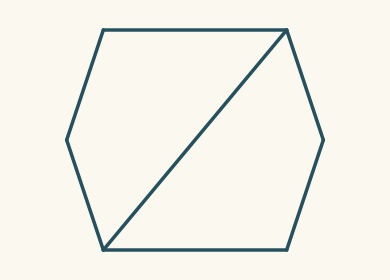
The teacher boundary has an unseen coarse route; retrieval alone cannot invent it.
L00043 · validation
No usable closed teacher boundary. Absence of a training target is not a negative shape label.
L00053 · validation
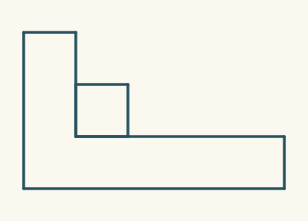
No one learned boundary accommodates these streams together. A multi-part scene can exceed the current one-boundary hypothesis.
L00056 · validation
No one learned boundary accommodates these streams together. A multi-part scene can exceed the current one-boundary hypothesis.
L00059 · test
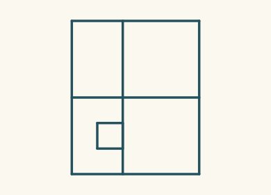
No one learned boundary accommodates these streams together. A multi-part scene can exceed the current one-boundary hypothesis.
L00066 · validation
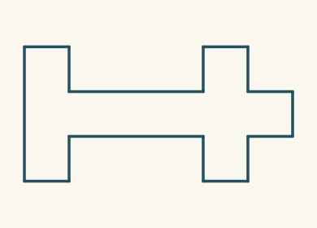
The teacher boundary has an unseen coarse route; retrieval alone cannot invent it.
L00069 · validation
The teacher boundary has an unseen coarse route; retrieval alone cannot invent it.